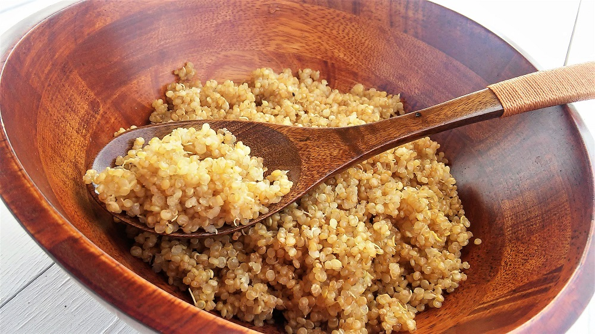

Perfect fluffy quinoa. One shot in the Instant Pot®!
Ingredients:
- 1 cup water
- 1 cup quinoa, rinsed and drained
Steps:
- Combine water and quinoa in a multi-functional pressure cooker (such as Instant Pot®); mix well. Close and lock the lid; set the pressure release valve to the sealing position. Press Steam button twice and set timer for 5 minutes. Allow 10 to 15 minutes for pressure to build.
- Release pressure carefully using the quick-release method according to manufacturer's instructions, about 5 minutes. Unlock and remove the lid.